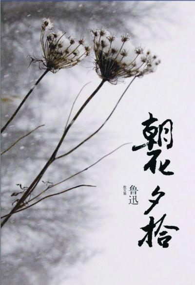

相关图片
-


- 
鲁迅的小说选材独特，在题材的选择上，鲁迅对古典文学中只选取“勇将策士，侠盗赃害，妖怪神仙，才子佳人，后来则有妓女嫖客，无赖奴才之流”的模式做出了改革，以“为人生”的启蒙主义式的创作目的，开创了“表现农民与知识分子”两大现代文学的主要题材。他的取材“多采自病态社会的不幸的人们中。”鲁迅在处理这些题材时又具有极其独特的眼光。在观察和表现自己的主人公时，他有着自己独特的视角，即始终关注着“病态社会”里知识分子和农民的精神“病苦”。因此，在《故乡》中，最震动人心的不是闰土后来的贫苦，而是他一声“老爷”所显示的心灵的麻木。对知识分子题材的开掘，又着眼于他们的精神创伤和危机，如《在酒楼上》老辣的眼光看到了辛亥革命中独战多数的英雄摆脱不了孤独的命运，在强大的封建传统压力下又回到原点，在颓唐中消耗着自己的生命。鲁迅的这些改革在《呐喊》和《彷徨》中就演化为“看/与被看”与“归乡”两大小说情节、结构模式。小说《示众》中所有人的动作只有“看”，关系也只有“看”与“被看”，由此形成了“看”与“被看”的二元对立，这种对立在《狂人日记》、《孔乙己》、《祝福》等小说中都有展现。而在“归乡”模式中鲁迅不仅讲述他人的故事也讲述自己的故事，两者互相渗透，影响，构成一个复调，如在《祝福》中，讲“我”、“祥林嫂”与“鲁镇”的三重关系，这个关系中既包含“我”与“鲁镇”的故事，又包含祥林嫂与鲁镇的故事，然而读者往往忽视前者，前者讲一个“永远漂泊者”的故事，后者讲一个封建社会吃人的故事。两个故事相串联，以祥林嫂的问题拷问“我”的灵魂，从而揭示“我”与鲁镇传统精神的内在联系。类似这种模式的小说还有《故乡》、《孤独者》和《在酒楼上》。
除此之外，一方面，鲁迅一直在探索主体渗入小说的形式。《在酒楼上》和《孤独者》中，小说的叙述者“我”与小说人物是“自我”的两个不同侧面或内心矛盾的两个侧面的外化，于是全篇便具有了自我灵魂的对话与相互驳难的性质。另一方面，鲁迅也在追求表达的含蓄、节制、以及简约、凝练的语言风格。他曾说“我力避行文的唠叨，只要求能将意思传给别人了，就宁肯什么陪衬也没有。”对此他在介绍写小说经验时也说“要极省俭的画出一个人的特点，最好是画他的眼睛。”“中国旧戏上，没有背景，新年卖给孩子看的花纸上，只有主要的几个人(但现在的花纸却多有背景了)，我深信对于我的目的，这方法是适宜的，”这也说明鲁迅在描写人物时着重人物的精神风貌，在描写中非常注重农民的艺术趣味。鲁迅研究了农民喜欢的旧戏和年画的艺术特点，并运用在自己的艺术创作中，使他的小说显示了浓重的民族特色。而他又广泛借鉴了诗歌、散文、音乐、美术，以至戏剧的艺术经验从事小说创作，并且试图融为一炉，于是出现了“诗化小说”（《伤逝》、《社戏》等）、散文体小说（《兔和猫》、《鸭的喜剧》等），以至“戏剧体小说”（《起死》等），等等。
30年代的鲁迅的创作精力主要放在杂文上，然而他并未忘记小说的创作，并贡献了他最后的创新之作《故事新编》。这部小说集依旧展现了鲁迅不羁的想象力与强大的创造力：对在《呐喊》和《彷徨》中创建的中国现代小说的创作规范进行新的冲击，寻找新的突破。在《故事新编》中，鲁迅有意识的打破了时空界限，采取“古今杂糅”的手法：小说中除主要人物大都有历史记载外，还创造了一些次要的戏剧性的穿插人物，在他们的言行中加入大量的现代语言，情节和细节。用现代语言自由发挥，以“油滑”的姿态对对现实进行嘲讽和揭露。同时在许多篇什中都存在着“庄严”和“荒诞”两种色彩与语调旋律，相互补充，渗透于消解。例如《补天》中，女娲造人时的宏大与瑰丽令人向往，而结尾，后人打着“造人、补天”的旗帜在死尸的肚皮上安营扎寨又显得极其荒诞，这种荒诞将前文的伟大感消失殆尽，并转化为一种历史的悲凉。
杂文特色鲁迅在他的一生中，特别是后期思想最成熟的年月里，倾注了他的大部分生命与心血于杂文创作中。他的杂文极具批判性，鲁迅曾把杂文分为“社会批判”和“文明批判”，所强调的正是杂文的“批评（批判）”内涵与功能。顺次翻开鲁迅生前出版的14本杂文集，就可以看到一部不停息地批判，论战，反击……的思想文化斗争的编年史：从《热风》开始的对封建礼教、旧传统的批判，与复古派的论争，一直延续到《且介亭杂文末编》对国民党政府的法西斯专政的抗议，对中国共产党内的“左倾”路线的反击。鲁迅杂文所显示的这种“不克厥敌，战则不止”的不屈精神，从根本上有违于中国文化与中国士大夫文化知识分子的“恕道”、“中庸”传统，集中的体现了鲁迅其人其文的反叛性、异质性。
鲁迅的批判不同于一般的思想评论，他把自己的批判锋芒始终对准人，人的心理与灵魂：这是一种文学家的关照。正如鲁迅自己说：“我的习性不太好，每不肯相信表面上的事情”，常有“疑心”。因此，他最为关注的正是人们隐蔽的，甚至自身无法自觉意识的心理状态。如杂文《论“他妈的”》，鲁迅在国人习以为常的“国骂”背后看出了封建等级、门第制度所造成的扭曲的而不免卑劣的反抗心理。鲁迅还提出了“推背式”的思考方式，即“正面文章反面看”，据此而写出的一些杂文，例如《小杂感》：“自称盗贼的无须防，得其反倒是好人；自称正人君子的必须防，得其反则是盗贼”：这都是深刻到了令人毛骨悚然的地步，自然也是“刻毒”。鲁迅的杂文思维也是非规范化的，他常在常规思维路线之外，另辟蹊径，别出心裁，就打开了全新的思路，例如其在著名的学术随笔《魏晋风度及文章与药及酒的关系》中就以这种思路就得出了不一样的结论：嵇、阮对礼教的破坏只是表面现象，事实上却是爱之过深的表现。鲁迅杂文的犀利、刻毒，令人难以接受，还在于他的同样违反“常规”的（联想力）想象力，鲁迅一方面将外观形式上离异最远似乎不可能联系在一起的人和事连接在一起：在“形”的巨大反差中发现“神”的相通；另一方面又能够发现和感受到历史与现实的独特联系。在《小品文的危机》中“烟花女子，已经不能在弄堂里拉扯她的生意，只好涂脂抹粉，在夜里到马路上来”。这样一端是高贵者及其殿堂，一端全是地上“最不干净的地方”，在经过鲁迅的牵连下就达到了“神圣”的“戏谑化”，“高雅”的“恶俗化”。
“将具体的、个别的人与事排除个别性、具体性、特殊性，做出普遍意义懂得整体概括，并加以简括的名称，经‘这一个’提升为‘这一类’的‘标本’，同时保留着形象、具体的特征，成为‘个’与‘类’的统一”这是鲁迅在进行论战时所采取的基本方法。在鲁迅生前的14本杂文集中塑造了许多精彩而典型的形象，如“叭儿狗”、“西崽”、“洋场恶少”、“革命工头”等等。这些形象常是对某人一时一地的言行作为一种典型现象来加以解剖，“攻其一点，不及其余”，从而提炼出的一种社会类型，这些形象具有超时空的意义，这也使得这种类型的“共名”与鲁迅小说里的阿Q、祥林嫂一样，具有长远的艺术生命力。

与思想的天马行空相适应，鲁迅杂文的语言也是无拘无束而极富创造力的。鲁迅的杂文可以说是把汉语的表意、抒情功能发挥到了极致。在他的杂文中：或口语与文言句式夹杂；或排比、重复局势的交叉运用；或长句与短句、陈述句与反问句的相互交错，混合着散文的朴实与骈文的华美与气势，可谓“深情并茂”。如《记念刘和珍君》中：“真的猛士，敢于直面惨淡的人生，敢于正视淋漓的鲜血。”酣畅淋漓，气势可观。而在另一方面，鲁迅杂文的语言又是反规范的，他故意地破坏语法规则，违反常规用法，制造一种不和谐的“拗体”，以打破语言对思想的束缚，同时取得荒诞、奇峻的美学效果。比如他有时将含义相反的或不相容的词组织在一起，于不合逻辑中显深刻：“有理的压迫”、“跪着造反”、“在嫩苗上驰骋”等等。
散文特色鲁迅所创作的散文不多但却可说篇篇精品，这些篇章收录于《朝花夕拾》和《野草》。《朝花夕拾》是鲁迅对于童年、青少年时期的回顾，是对作者青少年时期生活断片的回忆，包含少年时代的绍兴印象、南京求学、留学日本、回国后在绍兴任教等基本的成长经历，尤以记述故乡生活者为最多。相比他的杂文这些文章多了明朗、纯真、亲切的情味。《朝花夕拾》侧重于世态人情的描画，既侧重于生机盎然的自然情境（如《从百草园到三味书屋》）与满含生趣的少年行动（如《社戏》）的真切忆述，又侧重于带着宽厚的亲情刻画活生生的人物、比如藤野先生、范爱农、“三味书屋”的寿镜吾先生。作者没有生硬地用道德家的视角写他们，而是以情感带动团忆的笔。最有代表性的人物是长妈妈。在《阿长与山海经》等作品中，鲁迅尽量以客观的述说，不随意加以褒贬，在朴实的文字和故事中使读者深深地为长妈妈的善良、单纯、热诚、美丽的心灵所感动。相形之下，在《朝花夕拾》中、对旧日生活中枯燥、荒谬、愚妄的世相的不满，则显得并不突出。 旧日的美与爱．既可看作是鲁迅思想苦闷时的精神避难所，也可视为他“为现在抗争”的疲累身心的憩园。
旧日的美与爱．既可看作是鲁迅思想苦闷时的精神避难所，也可视为他“为现在抗争”的疲累身心的憩园。
与《朝花夕拾》“闲话”风格截然不同的散文诗集《野草》则呈现了另一种“鲁迅风”。在《野草》里，鲁迅的笔下，涌出了梦的朦胧、沉重和诡异，鬼魂的阴森与神秘；神幻的场景，荒诞的情节；不可确定的模糊意念，难以理解的反常感觉；瑰丽、冷艳的色彩，奇突的想象，浓郁的诗情……这些“奇峻的变异”一大原因是语言的特殊——来自于日常生活用语的变异，集华丽与艰涩于一身。另一方面的原因则是《野草》的变异的文体：明显的表现了散文的诗化、小说化（《颓败线的颤动》）、戏剧化（《过客》）。《野草》总的艺术特征是内敛的抒情倾向，它所表露的是灵魂的‘真”与“深”，是对于“人”自身存在困境的自觉体验与突围。鲁迅在这里借鉴吸收并成功地运用了象征主义手法，但比同时期李金发的硬性移植显然更加自主自如。因而也取得了艺术表现手法探索上的极大成功。《野草》以表现主题的不确定性，几乎包含了鲁迅情绪、性格甚至整个内心世界的各个侧面，它更是启蒙时期的文化批判者鲁迅向启蒙时期后的战斗者转折过渡阶段的心灵史。
学术思想鲁迅的文学史思想极为丰富深刻，发出具有时代特色的熠熠光辉。他创造性地从事了文学史的编撰工作，留给后世两部文学史专著——《中国小说史略》和《汉文学史纲要》，为我国的文学史研究作出了巨大的贡献。极为遗憾的是，由于当时不利于创作的现实客观条件，他本来计划要写的一部完整的中国文学史在有生之年未能完成。支持鲁迅进行学术创作的两大观念，其一，早期的进化论的文学史观，其二，中后期的马克思唯物论指导的文学史观。
鲁迅早年接受了严复《天演论》的影响，故而使得进化论的思想根深蒂固直接影响到他的学术研究。一方面，鲁迅认为文学作为一种艺术形式，不断地变化发展着，具有求新求变的本质，它的变化发展不可阻挡。“进化如飞矢，非堕落不止，非著物不止，祈逆飞而归弦，为理势所无有。”人类社会不断地进化，“便是文章，也未必独有万古不磨的典则。”文学样式之一的小说“亦如诗，至唐代而一变，虽尚不离于搜奇记逸，然叙述宛转，文辞华艳，与六朝之粗陈梗概者较，演进之迹甚明”，而作为小说的初始形态，“迫神话演进，则为中枢者渐近于人性，一凡所叙述，今谓之传说”。另一方面，在文学不断进化发展的基础上，鲁迅认为文学还必须革故鼎新。“进化的途中总须新陈代谢。所以新的应该欢天喜地的向前走去，这便是壮，旧的也应该欢天喜地的向前走去，这便是死各各如此走去，便是进化的路。”而在接受马克思主义学说之后的文学史研究中，鲁迅一直坚持着唯物论，从科学的客观性出发，坚持物质第一性，认为人的意识是对客观存在的反映和摹写。
翻译思想鲁迅是中国翻译文学的伟大开拓者。在他一生中，翻译和介绍外国文学作品占有很重要的位置。其翻译思想涉及翻译的各个重要方面，见解独到，对现今的翻译理论研究与翻译实践仍具有巨大的指导作用。与众多翻译理论相比，鲁迅的翻译思想朴实无华，大多通过贴近生活的比喻来表达。他的翻译思想涉及如下几个方面：

其一，鲁迅翻译外国文学作品的目的，是为改造社会服务，不是兴之所至或为翻译而翻译。他在《域外小说集》序中说到：“我们在日本留学的时候，有一种茫然的希望；认为文艺是可以转移性情、改造社会的，因为这意见，便自然而然地想到介绍外国文学这一件事。”由此可见，鲁迅把翻译与社会变革及国民命运联系在一起。其二，带有受众选择性的启蒙翻译观。鲁迅明确将“译文读者”纳入到翻译研究中。他提到：“我们的译书，还不能这样简单，首先要决定译给大众中的怎样的读者。将这些大众，粗粗地分起来：甲，有很受了教育的；乙，有略能识字的……”。在此，鲁迅对译文读者进行了分类并指出针对不同的读者采用不同的翻译方法。他的这一翻译应为读者考虑的原则，与西方的接受美学有异曲同工之妙。其三，“硬译”的翻译方法。鲁迅于20世纪30年代就提出“硬译”的方法，并在与梁实秋的论争中提出了“宁信而不顺”的翻译原则。鲁迅的这种观点绝非是要将“信”与“顺”对立起来，恰恰相反，他强调要兼顾两者。只是在“信”、“顺”不可兼得的情况下“宁信而不顺”。理由是“译得信而不顺的至多不过看不懂，想一想也许能懂，译得顺而不信的却会令人迷误，怎样想也不会懂，如果好像已经懂得，那么你正是入了迷途了。”他所说的“不顺”即容忍一些不顺，并非故意保持不顺，是为了将译文“装进异样的句法。”“但这情形也当然不是永远的,其中的一部分,将从“不顺”而成为“顺”，有一部分，则因为到底“不顺”而被淘汰，被踢开。这最要紧的是我们自己的批判。汉语近百年来不断吸收新的表达法，得到了不断的完善与发展，如人们早已习用的“在……的领导下”、“当……时”、“就……说”、“罢工”、“掉鳄鱼眼泪”、“武装到牙齿”等表达方法就是通过翻译进入汉语中的。现代汉语发展的事实证明，鲁迅的这主张是符合语言发展的趋势的。
书法特色鲁迅不仅是伟大的文学家和思想家，而且是一位优秀的书法家，由他的思想和文学成就之大，使得人们往往忽略他的书法成就。郭沫若曾称其书法“远逾宋唐，直攀魏晋。”鲁迅书法多为行书。综观其风格特点，当以颜真卿《争坐位帖》脱出，上融篆隶、章草意，下掺宋人笔、明清间翰札法，形成了朴质浑厚、外柔内刚、疏朗雅洁、洒脱灵便的艺术风格。大幅书作，注重章法、结体工稳、用笔凝重朴拙，舍细节而重大体，气缓意阔、气韵直入魏晋，足见其书法艺术修养之精深。小幅信札、文稿，则信手拈来，心闲手熟，因时变体，草草不工而古法具备，常得天真烂漫之趣，足见其早年书法临池之功厚。
鲁迅书法可分早、中、晚三期，各有其特点。早期为1901年前，书作主要宗法唐宋，上窥二王行书，下掺时人笔意，字体稍偏双逸、秀瓦笔势较放，笔画多见瘦长线条，笔力也愁纱露，结体章法多茂密。此期间笔端时夹少年血气，故韵味稍逊。中期为1911年至1927年间，书作主要取法魏晋楷行，兼掺章草、篆隶法，书风向朴质、简练、含蓄、疏朗转变。但此期间书作面目较多：如有的存魏晋小楷笔意；有的颜行中兼掺二王法；有的笔画圆浑、书体质朴、章法疏朗；有的融入篆隶笔意、带章草体势；也有的是其前期书风的复出等等。凡此均可视为过渡期书作。晚期为1927年至1936年间，书法已定型成熟。在鲁迅早年坚厚功底和中期审美选择以及长期劳作、抄录的基础上，出于工用为目的的鲁迅书体从技法到审美已趋成熟和稳定，形成了独自的风格。在技法上，用笔以中锋圆转、藏而不礴的浑厚线条为主；结体因字成形、形疏意密为特点；章法疏朗雅洁、气缓意逸、洒脱自然为主要风貌。在审美上，以质朴、典雅、自然、古厚为宗旨。
美术思想
鲁迅的一生和美术有着极为密切的关系。他不仅有深厚的艺术修养，对美术有着精深的研究，而且还积极倡导大众美术，亲自参与了大量的美术实践活动，在中国现代美术史上书写了光辉的一页。由爱国主义精神出发的改造国民性思想是鲁迅美术思想形成的根源基础。其主旨是：肯定美术的社会功利作用，强调美术与社会、时代、国民之间紧密的联系，把美术作为与一切黑暗、落后、腐朽的势力作斗争的武器，从而改变国民的精神。鲁迅美术思想的丰富内容体现出两个最基本的精神：一是注重并提倡大众的艺术，一是倡导现实主义的精神。鲁迅提倡现代的大众艺术，并注重古代的大众美术——民间美术，以此来说明美术只有尊重大众，才会具有不息的生命力。鲁迅的现实主义精神在对待美术遗产上集中表现为“拿来主义”在对待艺术创作本身这个问题上。则表现为强调作品的思想性和精神内涵。提倡大众艺术和倡导现实主义精神交相辉映。串起了鲁迅美术思想的丰富内容。
诗作特色鲁迅的创作生涯里也创作过许多优秀的诗歌。虽然总体数量并不是很大，但其艺术特点有着很多为人称道、值得深入研究的地方。郭沫若曾评价道：“鲁迅先生无心作诗，偶有所作，每臻绝唱。或则犀角烛怪，或则肝胆照人。”鲁迅的诗歌，在古体诗创作方面表现的尤为突出，这些诗歌不仅内容丰富、朗朗上口，更有很高的艺术美感及思想特色，是革命丰富情感、完美艺术特质的良好的结合体
鲁迅古体诗歌的艺术特点主要有以下几点：其一，个性鲜明，形象真实。在鲁迅的古体诗歌中，读者常常能够通过他所描述的种种自然景物或是一些具体的人物真切的感受到作者所要表达的情感。这些景物范围极广，蕴意很深，比如说“千林”、“鹭影”、“黄羊”等。而人物则有“挈妇”、“慈母”、“丈夫”、“英雄”等。有时，作者还常常以自画像的形式经自己作为诗中的主体，直白的表达出自己的所思所想，以开阔的胸襟让世人认识到自己所要批判和歌颂的主题。如《无题·惯于长夜过春时》一诗，作者运用“梦里依稀慈母泪，城头变幻大王旗。”一句简单明了的将自己身处白色包围中家人对自己的思念以及军阀混战民不聊生的场面形象生动的勾勒出来。作者并没有运用过多的语言铺垫，而是仅仅依靠“慈母泪”和“大王旗”两个意象以点盖面式的表达出来。其二，语言朴实，立意深刻。鲁迅的诗歌的语言是朴实自然的，并未有过多的雕饰和渲染，读来令人亲切自然，然而在细细品味时，便可以立刻发现其表达的立意，宣扬的情感却远不是那么浅显。如《庚子送灶即事》一诗中，可以清晰地发现鲁迅隐含在诗中的一种情绪——对封建迷信的讽刺与鞭挞。作者选取这一件事来反映家中的贫困，隐含的内容是认为灶神是不存在的，祭拜灶神只会让家中的贫困雪上加霜，要想摆脱命运只有靠自己，靠个人的抗争去换取明天的幸福。其三，修辞丰富，形式多样。在修辞方面，鲁迅的常用的修辞有比喻、夸张、用典、反语、对偶等。这些功能迥异、特色鲜明的修辞手法在鲁迅的笔下成为了很好的宣扬思想、发泄情感的武器，也让读者深刻地体悟到鲁迅渊博的学识与睿智的头脑。此外，鲁迅的古体诗形式也非常丰富，有五言律诗、七言绝句、七言律诗等。如五言有《庚子送灶即事》、《题〈彷徨〉》等，七言有《答客诮》、《自题小像》等。